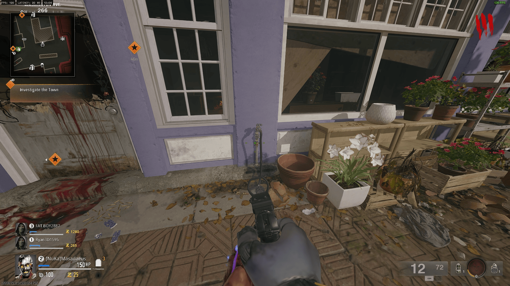
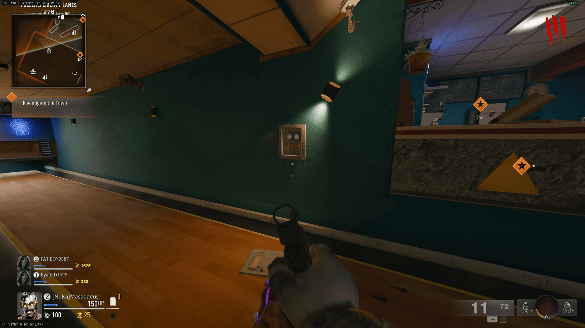
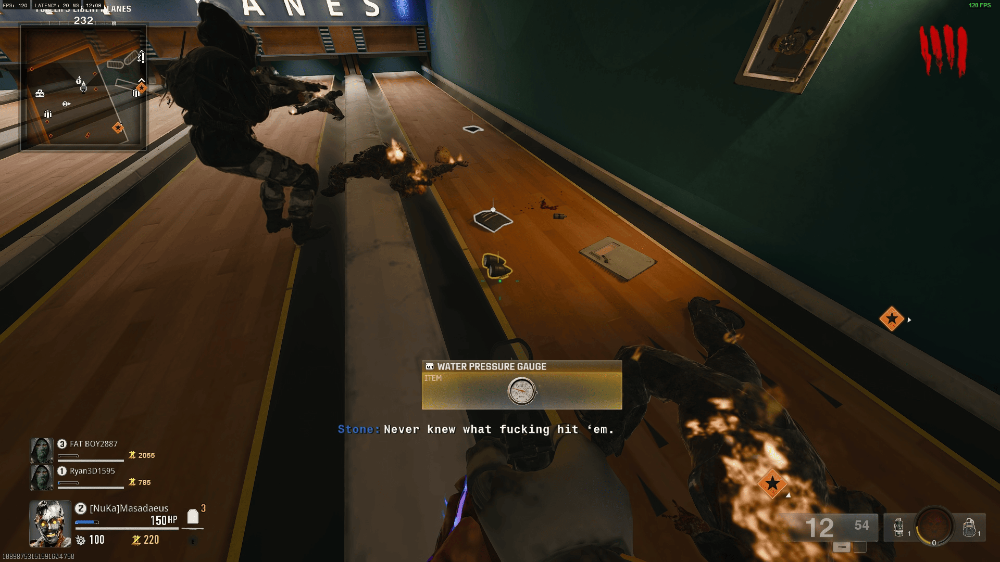
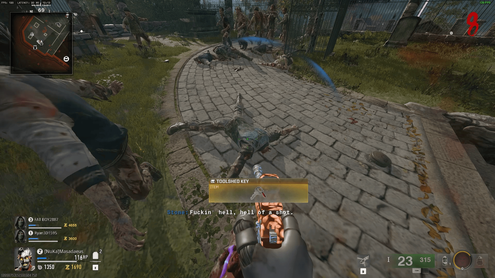
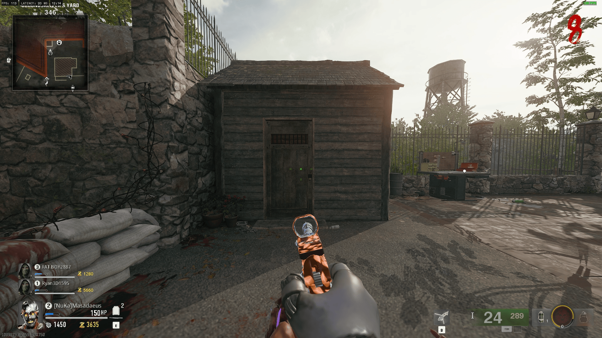
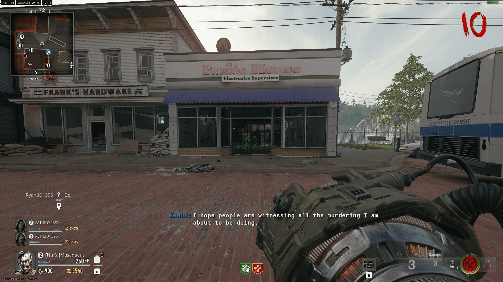
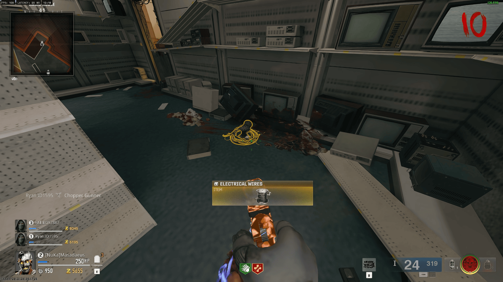
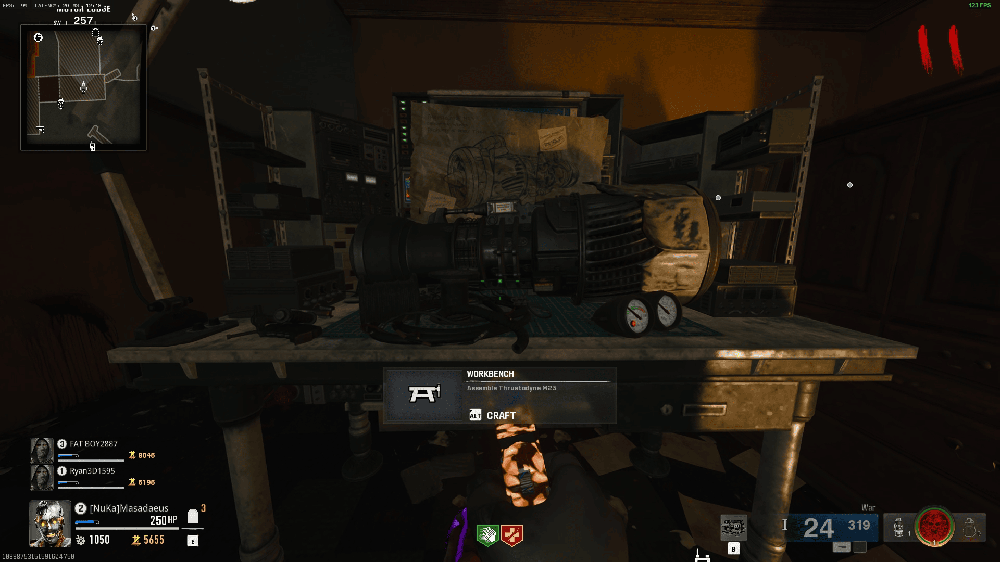
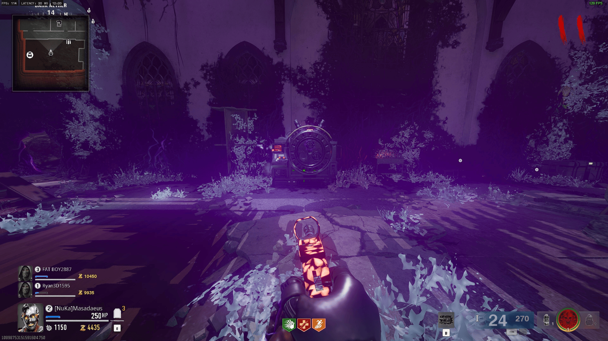
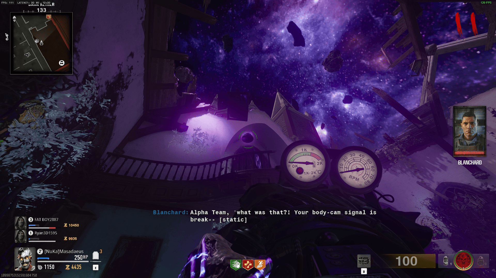

A sleepy West Virginia town with a sinister backroom cult. Restore power to the
town grid, rebuild the RAI K-84 Wonder Weapon, expose the church conspiracy, charge
four Aether Crystals, and face the Amalgam in an intense multi-phase showdown.
20Quest Steps
1–2hAvg Time
★★☆Difficulty
Best FirstMap to Try
🎒
Recommended Loadout
Pre-Game
💊Perks Priority
Juggernaut
Mandatory — boss charges are lethal
Quick Revive
Solo self-revive, or fast partner revive
PhD Flopper
Dive attacks deal explosion damage to boss clusters
Stamina-Up
Liberty Falls has tight corridors — you sprint constantly
🧠Gobblegums
Perkaholic
Easiest map to run this — grab all perks Round 1
In Plain Sight
Invisible briefly — use during crystal charging
Weapons of the Damned
Random mystery box WW — save for boss phase 2
🔫Weapons
XM4 (PaP Tier 2)
Fast TTK, great ammo economy
RAI K-84 (WW)
Fires void grenades — melts the Amalgam's weak points
🔮Ammo Mod
Napalm Burst
AoE fire — clears zombie clusters around crystals
Dead Wire
Stuns Amalgam briefly in Phase 1
💡
Beginner's Map
Liberty Falls is the recommended starting map. The quest is linear, the
town layout is easy to navigate, and the boss fight phases are predictable.
Learn the Easter Egg here before tackling Terminus or Citadelle.
⚡
Power Up the Town
Rounds 1–4
STEP 01
Turn on the Power at Liberty Falls Electrical Substation
The substation is on the eastern edge of town, behind the
Ray's Bait & Tackle shop. Pull the large
red lever to restore town power. This unlocks the Pack-a-Punch
and all perk machines.

RequiredUnlocks PaP
STEP 02
Pack-a-Punch your primary weapon (at least Tier 1)
The PaP Machine appears at the town square gazebo once power
is on. Tier 1 Pack is sufficient for early WW steps.

Required
STEP 03
Collect the Liberty Falls Newspaper (Quest Trigger)
A glowing newspaper lies on a bench outside the
Liberty Falls Diner. Picking it up reveals
redacted text about the church — this officially starts the quest.

Triggers Quest
🔫
Build the RAI K-84
Mid-Game
💡
Weapon Blueprint
Unlike Terminus, the RAI K-84 requires a blueprint schematic to be found first —
it's in the Library second floor. Get it before collecting parts.
STEP 04
Find the RAI K-84 Blueprint in the Library
On the second floor of Liberty Falls Public Library,
check the reading table closest to the south window. Pick up the
glowing blueprint scroll.

Blueprint First
STEP 05
Kill 30 zombies with headshots near the Town Hall
The first WW part — a Void Beam Emitter —
drops from the 30th headshot kill anywhere in the Town Hall
area (north quarter of the map).

WW Part 1
STEP 06
Destroy the glowing satellite dish on the Police Station roof
A corrupted satellite dish on the police station
rooftop emits black Aether energy. Shoot it 5 times with
any PaP'd weapon until it sparks and falls. Collect the
Antenna Fragment from the debris.

WW Part 2
STEP 07
Solve the Diner Fuse Box puzzle
Inside the Liberty Falls Diner, interact with
the open fuse box. The puzzle requires switching four fuses to
match the lit pattern on the wall poster.

WW Part 3Pattern on poster
The wall poster shows a 2×2 grid with two squares lit. Match that pattern on the fuses.
Default puzzle solution (fixed across all matches): Fuse A ON, Fuse B OFF, Fuse C ON, Fuse D OFF.
Confirm by pressing the large button on the left side of the box.
The Void Capacitor component will drop from the machine on the counter.
💡 If the poster is obscured by zombie damage, the default solution always works.
STEP 08
Assemble RAI K-84 at the Workbench (Gas Station)
The workbench is inside the Liberty Auto Gas Station
on the south end of town. Take all three parts and the blueprint here
to craft the RAI K-84. Hold interact (3 sec).

Wonder Weapon
⛪
Church Investigation
Rounds 10–14
STEP 09
Unlock the church with the Town Hall Key
After building the RAI K-84, a special Mayor Zombie
spawns wearing a suit and a glowing keychain. Kill it and
collect the Town Hall Key. This key also opens
the church door on the west end of Liberty Falls main street.

RequiredElite Zombie
STEP 10
Investigate the underground cult chamber
Inside the church, interact with the altar to reveal a hidden
trapdoor. Descend into the Cult Chamber. Four
ritual circles line the walls — each holds a glowing orb.

Required
STEP 11
Shoot the 4 Ritual Candles in the correct order
Each candle corresponds to a symbol burned into the chamber
floor. Shoot them in the order: Sun → Moon →
Eye → Spiral. Incorrect order restarts.
Use the RAI K-84's void shots — they don't require precision.
Timed PuzzleFixed Order
Sun symbol — North wall, floor level, left of the large painting.
Moon symbol — West alcove ceiling, above the stone basin.
Eye symbol — East wall centre, behind the wooden podium.
Spiral symbol — South wall near the trapdoor entrance.
⚠ After shooting the Eye, 3 Mimics spawn. Clear them before the Spiral or the sequence resets.
STEP 12
Collect the 4 Aether Crystals from the ritual circles
After the candle sequence, four purple crystals materialise in
the ritual circles. Pick all four up. They glow with corruption
energy and must be charged at the town's ley line nodes.
Required
💎
Charge the Aether Crystals
Rounds 14–18
⚠
Do All Four In One Round
Once you place the first crystal at a ley line node, a 3-minute timer
starts. All four nodes must be charged before the timer expires or you
lose all progress. Plan routes in advance.
STEP 13
Charge Crystal 1 at the Central Park Ley Line Node
Place the crystal on the glowing ground symbol in
Central Park. Kill 15 zombies within 10 metres
of it to charge with enough Aether energy. Crystal glow
changes from purple → gold when done.
Timed ⏱
STEP 14
Charge Crystal 2 at the Graveyard Node
Northeast of town at the St. Michael's Graveyard.
Same charging method — kill 15 zombies near the crystal.
Beware: this node has restricted space and a fence you cannot
mantle easily.
Timed ⏱
STEP 15
Charge Crystal 3 at the Bank Vault Node
The Liberty National Bank vault room in the
basement. Access via the back alley door. This is the most
enclosed node — use Brain Rot to convert a zombie so you're
not overwhelmed.
Timed ⏱
STEP 16
Charge Crystal 4 at the Church Bell Tower Node
Back to the church — climb the bell tower stairs (now
accessible after the catacombs sequence). The node is on the
bell platform. Final crystal charged triggers the boss
portal cutscene.
Timed ⏱Triggers Boss
💀
Boss Fight — The Amalgam
End Game
STEP 17
Prepare — Max Ammo & resupply before portal opens
You have one safe round after Crystal 4 charges. Buy Max Ammo from the box if available and re-up any downed perks.
Prep
STEP 18
Enter the Void Arena via the church portal
The boss arena is a circular void space. You'll be trapped here until the fight ends — no escaping. All 4 players must enter within 20 seconds.
Required
STEP 19
Defeat the Amalgam — 3 phases
See the boss phase guide below.
Boss Fight
STEP 20
🎉 Easter Egg Complete!
The Amalgam dissolves, the portal closes, and you're returned to Liberty Falls with the Easter Egg completion cutscene. You've earned it!
Done!
🕷
The Amalgam
A fused mass of zombified townsfolk, driven by Aether corruption. Weak to void energy and explosives.
1
Phase 1 — Ground Swipe (100% → 70%)
Amalgam drags itself across the floor, sweeping a wide arc. Jump over the sweep or sprint behind it. Exposed purple core on its back — RAI K-84 void grenades deal 4× damage here. Adds: Small zombie clusters.
2
Phase 2 — Split Form (70% → 35%)
The Amalgam splits into two smaller forms that orbit each other. Focus the one with the brighter core (the real one). Destroying a clone prematurely respawns it in 15 seconds. Adds: Disciple zombies with shields.
3
Phase 3 — Aether Eruption (35% → 0%)
The arena floor becomes partially electrified. Stay inside the white circles on the floor — standing on orange tiles deals rapid damage. The Amalgam's core becomes a permanent weak point — dump all remaining RAI K-84 ammo here.
🔶 Boss Survival Tips
RAI K-84 charged alt-fire (hold fire) deals massive damage to the core in all phases.
In Phase 3, use PhD Flopper dive-bombs into zombie clusters for extra crowd control.
Don't chase the Amalgam in Phase 2 — it baits you into the electrified floor.
Squad tip: one player stays mobile with SMG, three players focus DPS on the core.